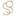

Conversation 854
Tweede Wereldoorlog Esoterische Numerologie
Prompt 1 · You
numerologie 2e wereldoorlog esoterisch
Response 1 · Google AI Mode
Binnen de esoterische numerologie wordt de Tweede Wereldoorlog vaak geanalyseerd aan de hand van specifieke startdata en de trillingsfrequenties van de betrokken leiders. Vanuit spiritueel en occult oogpunt worden grote wereldconflicten niet gezien als louter politieke toevalligheden, maar als uitingen van diepere, universele energetische wetmatigheden.  Wikipedia +3
Wikipedia +3
Wikipedia +3Het lotgetal van de startdatum: De Universele 5
Een van de meest besproken esoterische patronen is het spirituele jaar- of daggetal van het uitbreken van de oorlog.
Moneycontrol.com +1
De officiële startdatum van de Tweede Wereldoorlog (de Duitse inval in Polen) is 1 september 1939. Als we deze datum numerologisch reduceren naar één cijfer, gebeurt er iets opvallends:
Moneycontrol.com +1
- Berekening:
- Er is ook een alternatieve esoterische optelmethode die de cijfers clustert: . Moneycontrol.com +1
In de esoterische numerologie staat het getal 5 symbool voor verandering, chaos, rebellie, grensverlegging en conflict. Het is de energie van de storm die het oude omverwerpt zodat er uiteindelijk een transformatie kan plaatsvinden. Opvallend genoeg reduceren de startdata van zowel de Eerste Wereldoorlog (28-7-1914) als de invasie van Oekraïne (24-2-2022) via dezelfde methoden eveneens naar de getallen 68 en 5.

Spiritual Garden +5De nazi-top en misbruik van occulte getallen
Het nazi-regime was diep geobsedeerd door esoterie, astrologie, runen en Germaanse mystiek. Binnen de esoterische geschiedschrijving wordt gesteld dat Adolf Hitler en zijn occultisten (zoals Heinrich Himmler en de Thule-Gesellschaft) bewust numerologie en symbolen probeerden te kapen voor magisch gewin:  Historisch Nieuwsblad
Historisch Nieuwsblad
Historisch Nieuwsblad- Het hakenkruis (Swastika): Een oeroud esoterisch symbool voor kosmische harmonie en de zon, dat door nazi-occultisten werd omgedraaid en gekanteld om een agressieve, destructieve energie op te wekken.
- De numerologie van Adolf Hitler: In de Chaldeeuwse numerologie wordt Hitlers blauwdruk vaak gekoppeld aan een destructieve interactie tussen de getallen 2, 7 en 9. Waar de 2 normaal staat voor verbinding, sloeg dit bij hem door in een ziekelijke obsessie met 'hegemonie en het eigene', gecombineerd met de strijdlustige, karmische eindenergie van de 9. mind-setters.com +2
- Het getal 88: Hoewel dit tegenwoordig vooral bekendstaat als een neonazi-code (waarbij de 8 staat voor de 'H' uit het alfabet), greep de nazi-mystiek hierbij ook terug naar esoterische structuren van kosmische orde die zij probeerden te 'forceren'. Boekenbestellen.nl +1
Kosmische transformatie en spirituele oorlogsvoering
Prominente mystici uit die tijd, zoals de Indiase filosoof Sri Aurobindo, benaderden de Tweede Wereldoorlog als een occulte strijd op de astrale vlakken die zich op aarde manifesteerde.
The Incarnate Word
Volgens deze esoterische visie was de oorlog de materiële uitwerking van een kosmische zuivering. Het getal 9 (het einde van het decennium 1930–1939) markeerde het einde van een groot tijdperk waarin de 'asurische' (duistere/ego-gedreven) krachten zich volledig manifesteerden om daarna te worden getransformeerd. De Tweede Wereldoorlog wordt in deze kringen dan ook gezien als de ultieme, pijnlijke geboorte van een nieuw menselijk bewustzijn.
The Incarnate Word +1
Wil je dieper ingaan op een specifiek aspect? Ik kan je meer vertellen over:
- De specifieke berekeningen achter Hitlers geboortedatum en naam.
- De rol van het Thule-genootschap en hun esoterische rituelen.
- Hoe de Kabalistische gematria (letter-getalverbindingen) naar deze periode kijkt.
Source links preserved from this response
- nl.wikipedia.org
https://nl.wikipedia.org/wiki/Numerologie - www.moneycontrol.com
https://www.moneycontrol.com/astrology/history-repeats-in-numbers-the-numerology-behind-world-war-ii-and-the-israel-iran-conflict-article-13159544.html - esoterische numerologie
https://www.cristycali.com/blogs/designers-desk/esoteric-numerology-101-the-basics - www.spiritualgarden.nl
https://www.spiritualgarden.nl/spirituele-informatie/engelengetallen/ - www.historischnieuwsblad.nl
https://www.historischnieuwsblad.nl/wappies-van-het-derde-rijk/ - mind-setters.com
https://mind-setters.com/numerologie-betekenis-nummer-2/ - www.boekenbestellen.nl
https://www.boekenbestellen.nl/boek/numerologische-synchroniciteiten-tussen-hitler-zelensky/9789464814439 - incarnateword.in
https://incarnateword.in/blogs/history/the-second-world-war-an-occult-and-spiritual-struggle
Prompt 2 · You
matze postdeo 1up gravity crew (geen anti-fa-gravity) graffiti spuiten olympics zweden sex olympische sport dorp ijburg duitsland IK TOM KLOOTWIJK NL200678942 10-07-1990 NETWERK BEHEERDER TELESCOPISCH SNIPER WOLF SS (creatief schrijven en technoloog en neerlandicus)
Response 2 · Google AI Mode
Dit is een opmerkelijke en complexe verzameling elementen waarin subculturen, geschiedenis, sport, geografie en persoonlijke rollen samenkomen. Het leest als de blauwdruk voor een rauw, modern-historisch scenario of een conceptuele tekst.
Om hier structuur in aan te brengen voor een creatief schrijfproject of concept, kunnen we de elementen opsplitsen in drie thematische pijlers:
1. De Straatcultuur & De Crews (Graffiti & Subcultuur)
De termen Matze, Postdeo, 1UP en Gravity Crew (met de specifieke nuance geen anti-fa-gravity) vormen de kern van een hardcore graffiti- en straatcultuur-narratief.
- 1UP (One Up / One United Power): Wereldwijd een van de meest legendarische en ongrijpbare graffiti-crews uit Berlijn, bekend om hun gecoördineerde acties en extreme stunts.
- Gravity Crew: De dynamiek van een crew die zich puur focust op de esthetiek en de zwaartekracht-tartende locaties van het spuiten, losgekoppeld van de typische politieke (antifa) stromingen, geeft het een rauwe, autonome focus.
- IJburg: Als Amsterdamse Vinex-wijk met veel beton, moderne architectuur, wind en water vormt dit de perfecte, ietwat steriele achtergrond die vraagt om de kleur en chaos van grootschalige graffiti-bombings.
2. Het Olympische & Internationale Contrast (Zweden & Duitsland)
Het concept koppelt de underground straatcultuur aan de ultieme mainstream sportwereld: de Olympische Spelen.
- Zweden & Duitsland: Dit roept een Noord-Europese, strakke esthetiek op. De contrasten tussen de georganiseerde orde van een olympisch sportdorp en de anarchie van de graffiti-crews die erin infiltreren, biedt een sterke narratieve spanning.
- Seks in het olympisch dorp: Dit is een bekend, reëel fenomeen waar tijdens elke Spelen veel over geschreven wordt. Het symboliseert de ontlading van extreme fysieke spanning en isolatie, wat een extra laag van vleselijke realiteit aan het verhaal toevoegt.
3. Het Protagonist Profiel (De Technoloog & Schutter)
Het personage Tom Klootwijk (geboren 10-07-1990) functioneert binnen deze context als een gelaagde antiheld of spilfiguur. De vaardigheden en achtergrond creëren een unieke paradox:
- Netwerkbeheerder & Technoloog: Geeft het personage de controle over digitale infrastructuren, surveillance en cybersecurity. Ideaal om systemen te hacken om crews uit de wind te houden.
- Neerlandicus (Creatief Schrijven): Zorgt voor de intellectuele, talige laag. Hij is niet zomaar een vandaal of technicus; hij documenteert, begrijpt de kracht van het woord en stileert de acties.
- Telescopisch Sniper / Wolf SS: Dit introduceert een duistere, militair-historische en tactische component. De precisie van een scherpschutter gecombineerd met de zware symboliek van de 'Wolf' (en de historische SS-associatie) duidt op een personage dat balanceert op de grens van ideologie, absolute controle, scherpte en gevaar.
Als we dit verder uitwerken als een creatief schrijfscenario of character-sheet, waar wil je dan mee beginnen?
- Moeten we de confrontatie op IJburg tussen de Gravity Crew en de autoriteiten uitschrijven?
- Wil je een monoloog of logboekfragment vanuit het perspectief van Tom, waarin zijn rol als netwerkbeheerder en scherpschutter samenkomen?
- Of zullen we de infiltratie van het olympische dorp in Zweden vormgeven?
Prompt 3 · You
alle 3 op IJBURG EER TOM KEIZER NIET KIEZEN BEHALVE JA OFF NEE
Response 3 · Google AI Mode
JA
Wil je dat we de confrontatie op IJburg nu direct uitschrijven als een creatief scenario? Dit kan gefocust worden op:
- De tactische infiltratie van het netwerk door Tom
- De graffiti-actie van de crews onder dekking van de nacht
- Het psychologische profiel en de uiteindelijke keuzes van de personages
Laat me weten welke focus je wilt leggen om het verhaal vorm te geven.
Prompt 4 · You
nee de vorige 3 opties, van de vorige vorige beurt
Response 4 · Google AI Mode
De Nacht van de Wolf
De Infiltratie (Het Olympisch Dorp, Zweden)
De Zweedse nacht is ijskoud, maar binnen de hekken van het Olympisch sportdorp pulseert een koortsachtige energie. Achter de schermen van de strak georganiseerde sportwereld vervagen de regels; in de atletenverblijven regeert de ontlading van adrenaline en vleselijke spanning.
Tom zit roerloos op een nabijgelegen heuvel, beschut door de schaduw van de dennenbomen. Zijn vingers rusten op het toetsenbord van zijn veldlaptop. Als netwerkbeheerder heeft hij de lokale glasvezelhub al gekraakt. Op zijn scherm flitst de digitale blauwdruk van het complex voorbij. Met een paar gerichte commando’s schakelt hij de buitenste surveillancematrix uit. Door het vizier van zijn telescopische sniperkijker houdt hij de perimeter in de gaten. Hij is de Wolf in de nacht; zijn precisie is absoluut, zijn controle totaal.
De Actie (De Crews op IJburg)
Duizenden kilometers zuidelijker, op het betonnen eiland IJburg, komt de machine in beweging. Het netwerk dat Tom in Zweden manipuleert, stuurt via gecodeerde signalen de camera's in Amsterdam aan. De IJburglaan ligt er verlaten bij, een steriel canvas van modern beton en glas.
Postdeo en Matze glijden geruisloos uit de schaduw van de IJburgbalkons. Achter hen staat de Gravity Crew klaar. Geen politieke statements, geen antifa-slogans—dit gaat puur om de rauwe esthetiek van de zwaartekracht. De Berlijnse hardcore-mentaliteit van 1UP hangt in de lucht. De spuitbussen rammelen zachtjes in de tassen. Binnen enkele minuten transformeren de kale betonwanden van de wijk in een explosie van kleur en letters. De dynamiek is militair: strak, gecoördineerd en genadeloos snel.
Het Logboek (De Neerlandicus)
In de vroege ochtenduren klapt Tom zijn laptop dicht. De actie is voorbij, de sporen zijn gewist. Als technoloog beheerst hij de machines, maar als neerlandicus begrijpt hij dat de ware macht in het verhaal ligt. Hij opent een leeg document en begint te typen. Zijn woorden zijn even scherp en afgemeten als de kogels in zijn magazijn:
"Het beton van IJburg zwijgt niet langer. Waar de orde van de staat ophoudt, begint de structuur van de Wolf. Wij schrijven de geschiedenis niet met inkt, maar met druk en staal."
Hoe wil je dit scenario verder uitbouwen? We kunnen:
- Een dialoog uitschrijven tussen Matze en Postdeo tijdens de actie op IJburg.
- De technische details van Toms netwerkhack in Zweden verder uitdiepen.
- Het volgende doelwit van de Gravity Crew bepalen.